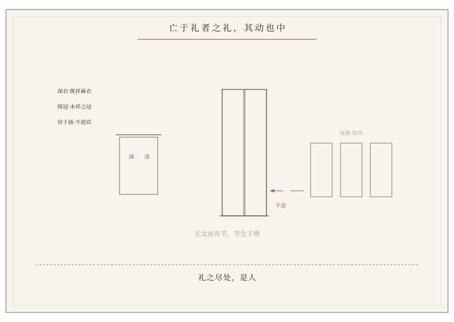

檀弓上 · 三·六十 · 第 263 课
將軍文子之喪，既除喪，而後越人來吊。主人深衣練冠，待於廟，垂涕洟。子游觀之曰：「將軍文氏之子，其庶幾乎！亡於禮者之禮也。其動也中。」
说什么事：丧已除完，远国的人才来吊。礼书没写此时该穿什么、在哪受吊。主人自己配了一身：深衣、练冠，在庙里等，涕从目、洟从鼻。子游看见了，说这就是「无文之礼」。
落在哪一层：礼，兼及礼数与礼意。论「礼之尽处是人」。
为何编在此位：此为卷七之末，亦檀弓上之前半之收。前四节论礼之失、之得、之异、之讥，此节论礼之所不及——礼到此为止，人从此起。
【经】將軍文子之喪，既除喪，而後越人來吊。主人深衣練冠，待於廟，垂涕洟。子游觀之曰：「將軍文氏之子，其庶幾乎！亡於禮者之禮也。其動也中。」
【注】主人，文子之子简子瑕也。深衣练冠，凶服变也。待于庙，受吊不迎宾也。涕自目、洟自鼻。中礼之变。
【疏】此一节论居丧得中礼之变。将军文子其身终亡，既除丧、大祥祭之后，越人来吊，谓远国之人始吊其丧。主人文子之子，身著深衣，是既祥之麻衣也；首著练冠，谓未祥之练冠也；待宾于庙，目垂于涕、鼻垂于洟。「亡，无也」：始死至练祥来吊，是有文之礼；祥后来吊，是无文之礼。言文氏之子庶几堪行乎无于礼文之礼也，所以堪行者，以其举动也中，当于礼之变节也。深衣即《间传》麻衣也，但制如深衣：缘之以布曰麻衣，缘之以素曰长衣，缘之以采曰深衣。练冠者，谓祭前之冠；若祥祭则缟冠也。此谓由来未吊者，故练冠；若曾来已吊、祥后为丧事更来，虽不及祥祭之日，主人必服祥日之服以受之，故《杂记》云「既祥，虽不当缟者必缟，然后反服」。推此而言，禫后始来吊者则著祥冠；若禫后更来有事，主人则著禫服；其吉祭已后或来吊者，其服无文。除丧之后亦有吊法，故《春秋》文九年「秦人来归僖公成风之襚」是也。云「待于庙，受吊不迎宾也」者，以其死者迁入于庙，故今待吊于庙就死者。案《士丧礼》：始死为君命出，小敛以后为大夫出，是有受吊迎宾；今以除服受吊，故不迎宾也。或曰此非已君之命，以敌礼待之，故不迎也；或云此是禫后吉时来也，故不在寝而待于庙也，《礼论》亦同。
越人 越国之人，远国之人。疏「远国之人始吊其丧」。
除丧 丧服已除。疏谓「大祥祭之后」。
深衣 此指既祥之麻衣，制如深衣。疏：缘之以布曰麻衣，缘之以素曰长衣，缘之以采曰深衣。
练冠 祭前之冠。祥祭则缟冠。此因「由来未吊」，故练冠。
待於庙 在庙里等。死者已迁于庙，故就死者受吊。
涕洟 注「涕自目、洟自鼻」。涕，泪；洟，鼻液。
庶几乎 差不多可以了。庶几，近。
亡於礼者之礼 亡，无。礼文所无之礼。
其动也中 举动合节。中，当于礼之变节。
将军文子死了，丧都除完了，远国的人才来吊。主人穿着深衣、戴着练冠，在庙里等着，眼泪从眼里下来、鼻液从鼻里下来。
子游看见了，说：「将军文氏的这个儿子，差不多可以了！这是礼书上没有的礼。他的举动，处处合节。」
礼有「有文之礼」，有「无文之礼」。始死至练、至祥，凡来吊者，礼书皆有服、有位、有迎不迎之节；祥后来越人来吊，礼书无文。无文不等于无礼——礼的精神在「节」，节可以自造，只要中。
主人自造的这一节，全在三个选择上：深衣而不衰，是不复以丧服自居；练冠而不缟，是不以吉冠自处；待于庙而不迎，是不以生者之礼接远客，而以死者之地接之。三者合成一个位置：丧已尽而哀未尽。
「垂涕洟」三字是全节的证据。除丧已久，闻远吊而涕，不是为死者哀——哀早已定；是为「他的丧还远有人来」而哀。此一涕，说明前面三个选择不是算出来的，是长出来的。
第一层 无文之礼 「亡，无也」。疏分得清楚：始死至练祥来吊，是有文之礼；祥后来吊，是无文之礼。有文者守其文，无文者守其节。守节无书可据，故须「中」；中者，不偏于吉，不偏于凶。
第二层 深衣练冠之配 深衣是既祥之麻衣，属「凶服之变」；练冠是祭前之冠，未及祥之冠。一身之上，一凶一未祥，各取一半。此配法极妙：丧已除，故不可衰；人来吊其丧，故不可纯吉。取「既祥之麻衣」与「未祥之练冠」相合，恰是「除而未远」的时节。疏又推出一串：曾来已吊、祥后更来者必缟（《杂记》「既祥，虽不当缟者必缟」）；禫后始来吊者著祥冠；禫后更来有事则著禫服；吉祭已后或来吊者，其服无文。可见「无文」不是一处，是一整段渐变的带。
第三层 待于庙不迎 死者已迁于庙，待于庙是就死者受吊。丧礼常制：始死为君命出，小敛以后为大夫出，是有迎。今以除服受吊，故不迎。不迎不是慢客，是把「受」的位置从生者移到死者。
第四层 子游之评 「其庶几乎」——庶几者，近而未至之辞。子游习礼，不肯许人以「是」，只说「差不多」。而「亡于礼者之礼」「其动也中」两语，把「无文」与「中」连成一句判语：礼之尽处，是人。此为《檀弓》全篇之极则。
与今日何干 规定写不到的地方，人怎么办。此节给的答案不是随意，也不是死守，是以「中」为准自造一节；而自造的凭据，是那一点真情——涕洟。真情在，则自造之节不虚；真情不在，则一切自造都是表演。
| 左 | 右 |
|---|---|
| 深衣（既祥之麻衣） | 不复以丧服自居 |
| 练冠（未祥之冠） | 不以吉冠自处 |
| 待于庙 | 就死者受吊 |
| 不迎宾 | 不以生者之礼接客 |
| 垂涕洟 | 哀未尽之证 |
| 亡于礼者之礼 | 无文而有节 |
| 其动也中 | 合于变节 |
| 庶几乎 | 近而未许 |
画一座家庙的门内，视点平。门内偏东站着主人（青年、深衣、练冠、双手垂在身前、面上两道痕），身后是庙中神位前一盏未撤的素灯；门外阶下立着两三位远客（衣冠异于本土、风尘仆仆、手执币）。门内门外之间空着一片地，无人跨过。不写文字、不画人面细节。赭色只用在主人冠上的一道细边与远客手中币的一角。
